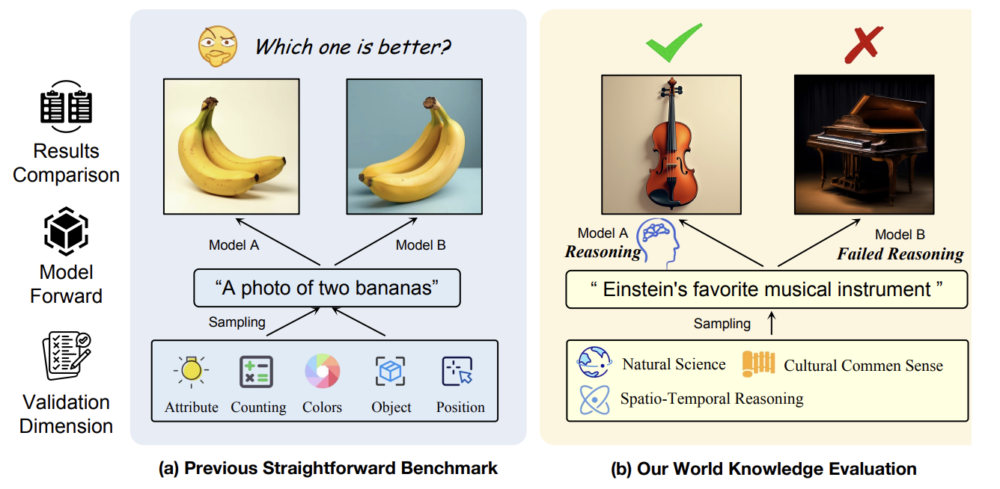
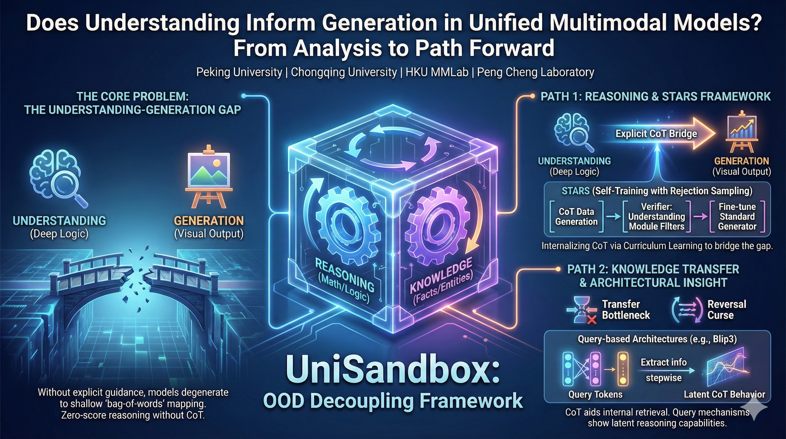
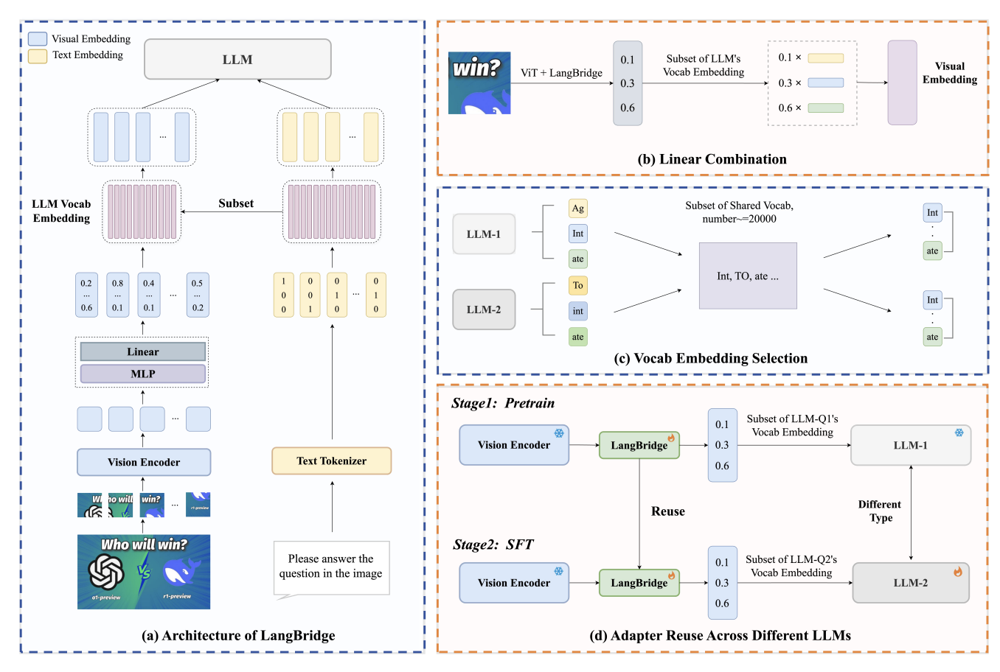
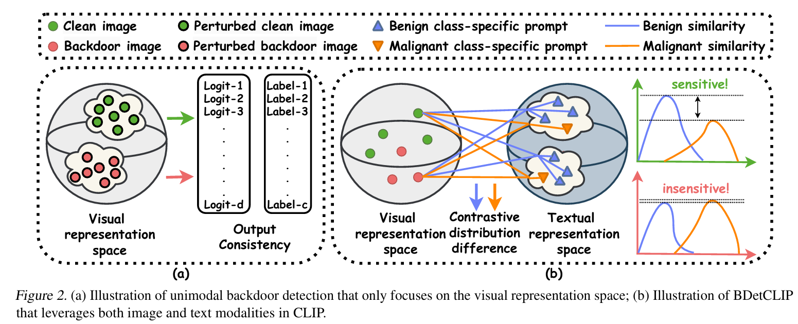
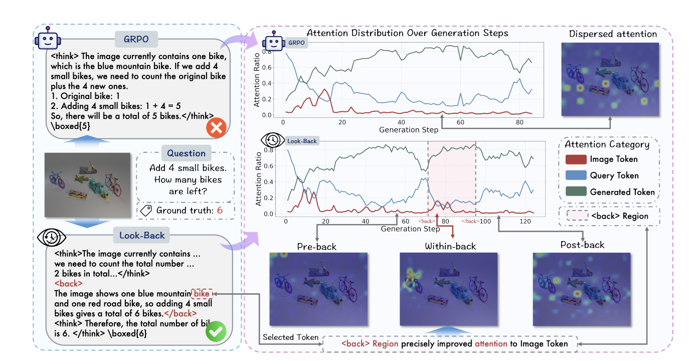
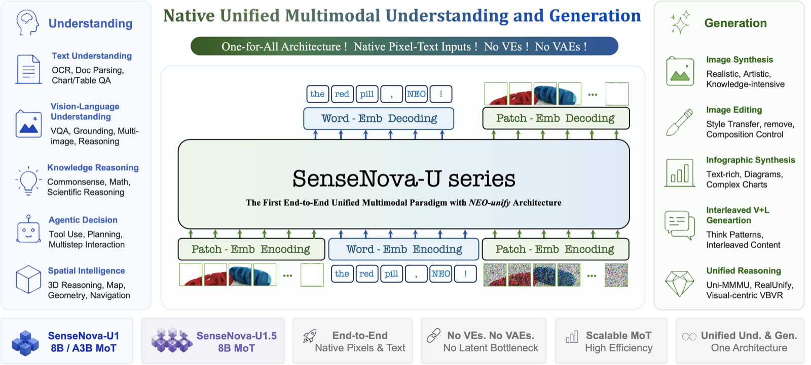
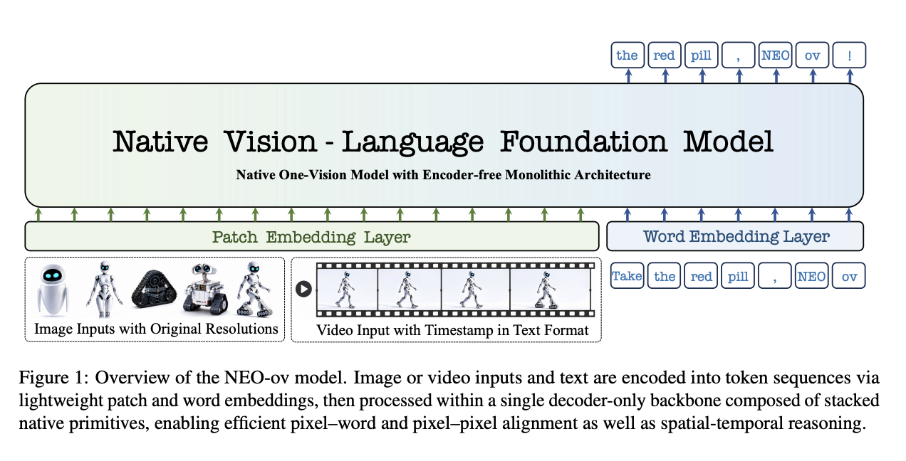
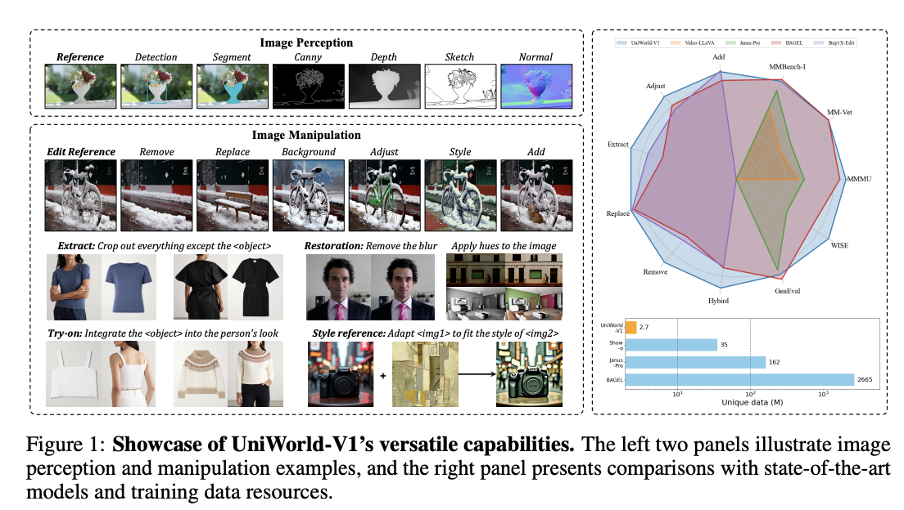

About Me
I am a first-year M.S. student at Peking University, advised by Prof. Li Yuan. I have also been fortunate to work closely with Prof. Lei Feng and Prof. Ziwei Liu.
My core research focuses on visual representations and language priors. Vision directly depicts the physical appearance of the "real world"; while language, as the refinement and abstraction of visual information, constructs the knowledge landscape of the "human world." I firmly believe that bridging the gap between the language modality, which carries "human world" prior knowledge, and the visual modality, which directly reflects the "real world," is a crucial step towards achieving general artificial intelligence. This not only involves finding effective mapping paths between modalities but also concerns how to leverage their respective strengths to build a unified framework collaboratively.
Currently, I am dedicated to researching model architectures and building multimodal intelligence.
🤝 I am eager to discuss potential collaborations and am actively seeking industry internship opportunities in multimodal models. Please feel free to contact me via email or WeChat: purshow if you are interested.
Education
-
Peking University M.S. in Computer Science, School of Electronic and Computer Engineering2026 – 2029
-
Chongqing University B.Eng. in Computer Science, Hongshen Stand-Out Class2022 – 2026
Experience
-
NTU LMMs-Lab Visiting Student / Research InternMar 2026 – Now
-
Bytedance Seed-Vision Research InternSep 2025 – Mar 2026
Selected Publications 6
Full paper list can be found on Google Scholar. * Equal Contribution † Project Lead
-

-

-

-

-

-

Tech Reports 3
-

Tech ReportSenseNova-U Series- SenseNova-U1.5: Towards Native Unified Visual Intelligence
- SenseNova-U1: Unifying Multimodal Understanding and Generation with NEO-unify Architecture
Code 6.9k -

-

Blog
- Purshow's Notes Bilingual (CN/EN) research notes on Attention, MoE, Muon, On-Policy Distillation, Vision Encoders, Encoder-Free Models, Video VAEs, World Action Models, YOCO, Sparse Vocab Embeddings, and Beyond Residual Connection.
- Why Removing the Vision Encoder Can Be Better — From an Infra Perspective
- When Vision Is Pushed to the Roadside
- The (Possible) Future of Multimodal Understanding: From Describing the World to Entering the World
I occasionally write blogs to share my thoughts. Chinese readers can find the full archive on my RedNote.
Personality
Beyond science, I am deeply passionate about literature, poetry, anime, films, music, and all forms of art that embody human creativity. I firmly believe these are the reasons for our existence. Currently, I am deeply captivated by the literature of Dostoevsky and Tolstoy, and R&B music (such as Prince, Stevie Wonder, D'Angelo, David Tao, and Khalil Fong).
Contact Me
I believe good ideas and meaningful progress often come from open discussion and thoughtful disagreement. If you have comments on my work, different perspectives, or new ideas you would like to share, I would be very happy to hear from you.
I have been fortunate to meet many friends and mentors who have helped me along the way. I am also always happy to chat and offer whatever help I can to others.
If you have questions about my research, or if you have tried to reach me through GitHub issues but have not received a response, please feel free to email me directly.
My preferred email: niuyuwei04@gmail.com